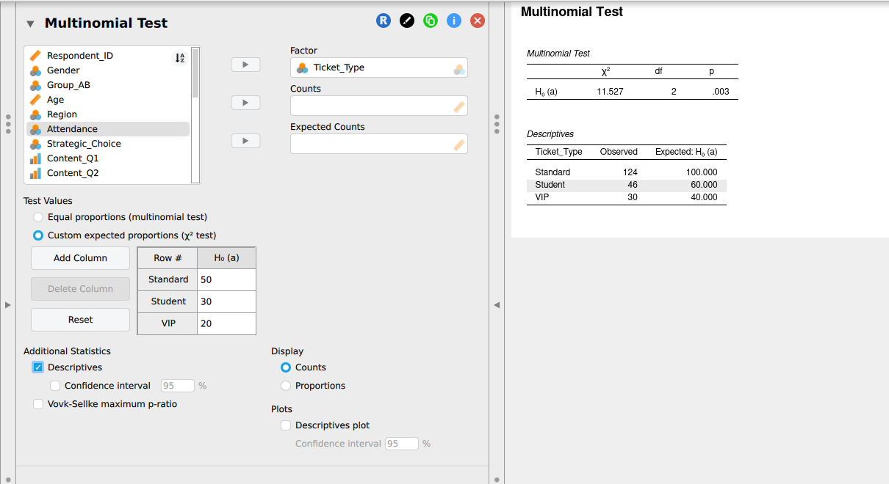
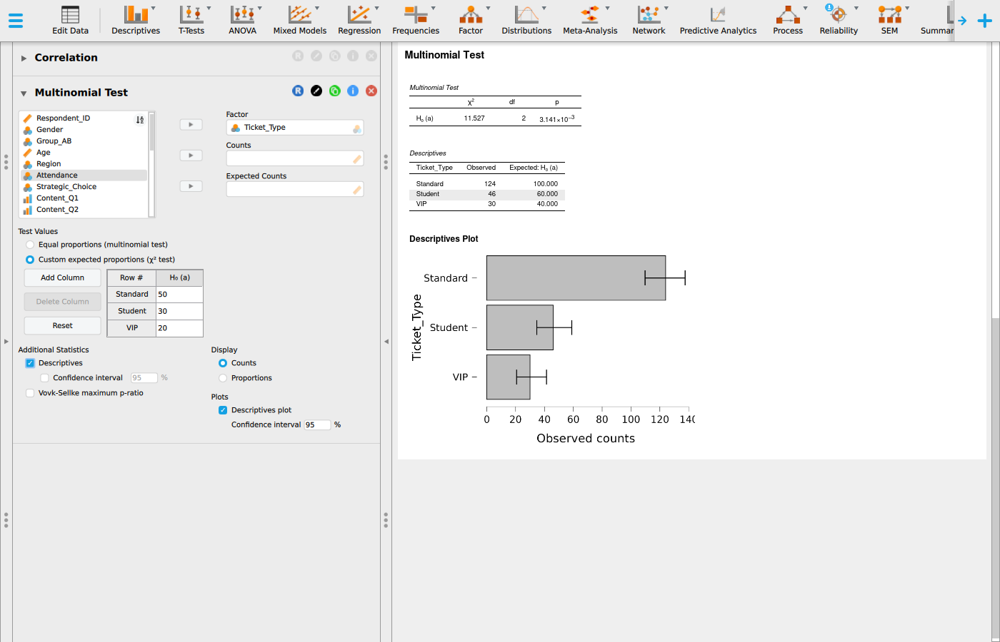
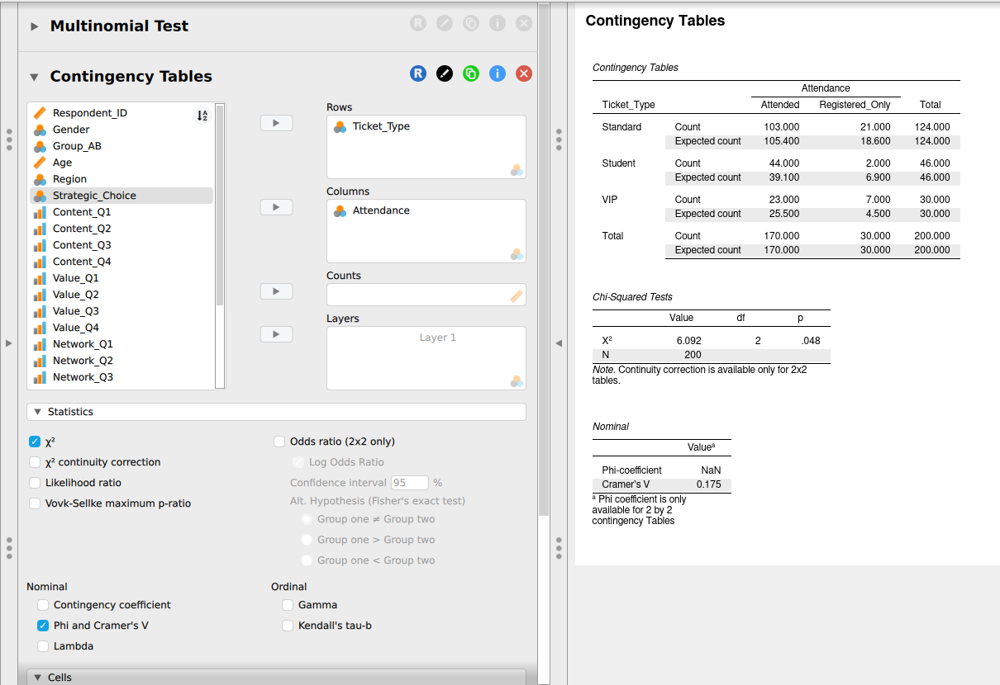
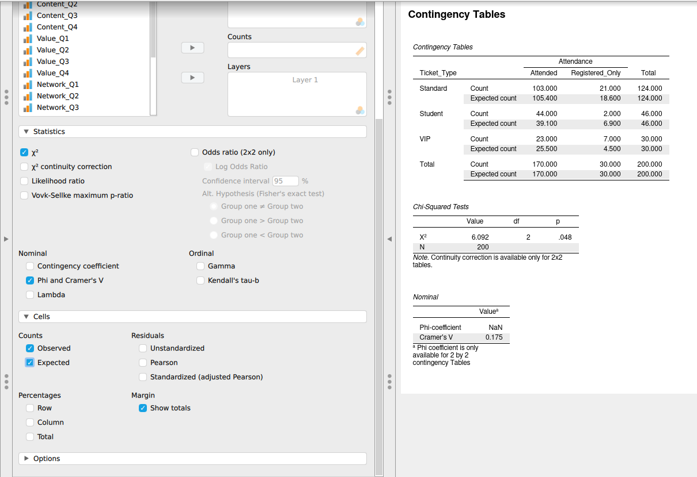

Chi-squared: goodness of fit and association
chi-squared test, goodness of fit, test of association, contingency table, expected counts, Cramér’s V
Chapter 10: Chi-squared Tests
The marketing manager planned a ticket mix of 50% Standard, 30% Student and 20% VIP, and asks: did our sales match the plan? The service manager returns to the no-show result from chapter 8 and asks: is attendance related to ticket type? We answer both with a chi-squared test, because each one concerns counts in categories.
This chapter uses DMM_Teaching_Data_Full.csv, the same 200 customer records as chapters 1 to 9. Every figure quoted from it comes from that file. The planned ticket mix is an illustration.
This chapter’s lecture
Lecture Chi-squared analysis for categorical data
Discussion
1 Welcome and weekly goals
⏱ 10 min
Focus on questions whose data are counts in categories, such as ticket types and attendance.
Acquisition
2 Chi-squared test types
⏱ 30 min
The difference between goodness-of-fit testing and tests of association, and how to interpret each one.
Practice
3 Worked example and discussion
⏱ 15 min
Work through a short example and explain what the result tells a manager about the pattern in the data.
Assessment
4 Exit check
⏱ 5 min
An exit check on the difference between the two chi-squared uses.
Learning objectives
After studying this chapter you should be able to:
- Select between a goodness-of-fit test and a test of association. CLO 4
- Calculate expected counts and the chi-squared statistic for a small table. CLO 4
- Interpret a chi-squared result from its degrees of freedom and p-value. CLO 4
- Check the expected-count assumption in JASP. CLO 2
- Calculate Cramér’s V for an association. CLO 4
- Report a chi-squared test in APA style and for a manager. CLO 6
The tag after each objective names the course learning outcome it serves.
This week’s learning plan is 9 hours: 1 hour of synchronous lecture, 2 hours of synchronous tutorial and 6 hours of asynchronous self-study. Put your self-study time into the worked examples and the Try It exercises first.
This chapter uses the hypotheses, the p-value and the significance level from chapter 4, and the reporting rules from chapter 5. It works in JASP, and the hand calculations need a calculator.
You are permitted to use Google NotebookLM to brainstorm the concepts. Complete the worked examples and the Try It exercises yourself, with no AI assistance. The full policy is on the Using AI on This Module page.
In chapter 9 we measured how two scale or ordinal variables move together. In this chapter the variables are categories, and the data are counts.
Counts in categories
Our 200 customers bought three ticket types: 124 Standard, 46 Student and 30 VIP. A ticket type is a category, so it has no mean or standard deviation. What we can compare is the observed count in each category, the number we recorded, with an expected count, the number expected under a hypothesis.
For example: the marketing plan puts Standard tickets at 50%. Out of 200 sales that is \(200 \times 0.50 = 100\) expected Standard tickets, and we observed 124. The question is whether a gap of 24 tickets, together with the gaps in the other categories, is larger than sampling variation usually produces.
This chapter uses two chi-squared tests, and each keeps one name throughout:
| Test | Question it answers | Example in this chapter |
|---|---|---|
| Chi-squared goodness-of-fit test | Does one categorical variable match expected proportions? | Ticket mix against the 50/30/20 plan |
| Chi-squared test of association, also called the test of independence | Are two categorical variables related? | Ticket type and attendance |
Both compare observed counts with expected counts, through the same statistic.
The chi-squared statistic
Karl Pearson (1900) proposed squaring the gap between the observed and expected count in each category, scaling it by the expected count, and adding the results:
\[\chi^2 = \sum \frac{(O - E)^2}{E}\]
where \(\chi^2\) (chi-squared) is the test statistic, \(O\) is the observed count in a category, \(E\) is the expected count in that category, and \(\sum\) adds over all the categories. Squaring makes every gap positive, and dividing by \(E\) scales each gap to the size of its category: a gap of 10 is large when 5 were expected and small when 500 were.
A \(\chi^2\) of 0 means the observed counts equal the expected counts exactly. The larger \(\chi^2\), the further the observed counts deviate from the expected counts.
To judge whether a \(\chi^2\) is large, we compare it with a critical value. The critical value comes from the chi-squared distribution, never from our data: it is the value that only 5% of samples pass when the null hypothesis is true. The distribution, and so the critical value, depends on the degrees of freedom, \(df\):
| \(df\) | 1 | 2 | 3 | 4 | 8 |
|---|---|---|---|---|---|
| Critical value at \(\alpha = .05\) | 3.84 | 5.99 | 7.81 | 9.49 | 15.51 |
Read the column for your \(df\). A spreadsheet gives the same values: =CHISQ.INV.RT(0.05, 2) returns 5.99. When \(\chi^2\) is larger than the critical value, \(p\) is below .05 and we reject the null hypothesis. The two routes always reach the same decision, and JASP gives the exact p-value.
The goodness-of-fit test
We use the chi-squared goodness-of-fit test to compare the counts of one categorical variable with the proportions set by a hypothesis. We state the hypotheses before any calculation. For the ticket mix:
- \(H_0\): the population ticket mix is 50% Standard, 30% Student and 20% VIP
- \(H_1\): the population ticket mix differs from that plan.
Each expected count is \(E = N \times p_0\), where \(N\) is the total count and \(p_0\) is the proportion set for that category under the null hypothesis. The degrees of freedom are \(k - 1\), where \(k\) is the number of categories.
Worked example 10.1
Ticket sales against the plan
The dataset contains 124 Standard, 46 Student and 30 VIP tickets, 200 in all. The plan was 50%, 30% and 20%.
Calculate the expected counts and the chi-squared statistic, find the degrees of freedom, and decide at \(\alpha = .05\).
Step 1, the expected counts: \(200 \times 0.50 = 100\), \(200 \times 0.30 = 60\) and \(200 \times 0.20 = 40\).
Step 2, each category’s contribution:
| Ticket type | \(O\) | \(E\) | \(O - E\) | \((O - E)^2 \div E\) |
|---|---|---|---|---|
| Standard | 124 | 100 | 24 | 5.76 |
| Student | 46 | 60 | −14 | 3.27 |
| VIP | 30 | 40 | −10 | 2.50 |
| Total | 200 | 200 | 0 | 11.53 |
Step 3, the degrees of freedom: \(k - 1 = 3 - 1 = 2\).
Step 4, the decision: 11.53 is larger than the critical value of 5.99 for 2 degrees of freedom, so we reject the null hypothesis. JASP gives \(p = .003\). We sold more Standard tickets than planned, and fewer Student and VIP tickets. Standard gives the largest share of the statistic, 5.76 of 11.53.
Running the goodness-of-fit test in JASP
JASP has no menu item called chi-squared. Both chi-squared tests sit under Frequencies: the goodness-of-fit test is the Multinomial Test with custom expected proportions, and the test of association is Contingency Tables with χ² ticked. The same menu offers a Binomial Test, an exact test for one variable with only 2 categories. With 2 categories and 200 customers, the goodness-of-fit test gives almost the same p-value, so this chapter uses the chi-squared test for both.
We run the goodness-of-fit test in JASP on DMM_Teaching_Data_Full.csv. Open the file and follow these steps:
- Choose Frequencies → Classical → Multinomial Test.
- Move
Ticket_Typeinto Factor. - Under Test Values, select Custom expected proportions (χ² test).
- In the table that appears, type 50, 30 and 20 against Standard, Student and VIP. JASP reads them as relative sizes, so 5, 3 and 2 give the same result.
- Under Additional Statistics, tick Descriptives to see the observed and expected counts.

To test against equal proportions, leave Equal proportions (multinomial test) selected.
For a picture of the result, tick Descriptives plot under Plots. Each bar is an observed count with its 95% confidence interval, and the Descriptives table above it lists the expected counts for comparison.

In Figure 10.2 the Standard bar reaches 124, well past the 100 expected, while Student and VIP fall short of 60 and 40.
In APA style: A chi-squared goodness-of-fit test found that ticket sales differed from the planned mix, \(\chi^2(2, N = 200) = 11.53\), \(p = .003\).
For the manager: We sold 124 Standard tickets against a plan of 100, and fewer Student and VIP tickets than planned. We recommend starting next season’s plan from the mix sold this season.
The dataset contains 112 female and 88 male customers. Test whether the population splits 50:50.
- Calculate the expected counts and \(\chi^2\).
- Find the degrees of freedom, and decide using Table 10.2.
- Each expected count is \(200 \times 0.50 = 100\). The contributions are \((112 - 100)^2 \div 100 = 1.44\) and \((88 - 100)^2 \div 100 = 1.44\), so \(\chi^2 = 2.88\).
- \(df = 2 - 1 = 1\), with a critical value of 3.84. Since 2.88 is smaller, we retain the null hypothesis: the evidence is insufficient at \(\alpha = .05\) to conclude that the population split differs from 50:50. JASP gives \(\chi^2(1, N = 200) = 2.88\), \(p = .090\).
Run a goodness-of-fit test of Region against equal proportions in JASP. Report \(\chi^2\), its degrees of freedom and \(p\), and state your decision.
There are 5 regions, so \(df = 4\). JASP gives \(\chi^2(4, N = 200) = 0.70\), \(p = .951\). We retain the null hypothesis: the evidence is insufficient at \(\alpha = .05\) to conclude that the regions’ shares differ. In this sample the counts run from 36 to 43, against 40 expected per region.
The test of association
We use the chi-squared test of association, also called the test of independence, to judge whether two categorical variables are related. We set out the counts in a contingency table, one row per category of the first variable and one column per category of the second:
| Ticket type | Attended | Registered only | Total |
|---|---|---|---|
| Standard | 103 | 21 | 124 |
| Student | 44 | 2 | 46 |
| VIP | 23 | 7 | 30 |
| Total | 170 | 30 | 200 |
The hypotheses are:
- \(H_0\): ticket type and attendance are independent in the population: the attendance rate is the same for every ticket type
- \(H_1\): ticket type and attendance are associated.
Under the null hypothesis, every ticket type would match the overall rate. Overall, 30 of 200 customers stayed away, so we would expect \(124 \times 30 \div 200 = 18.6\) Standard holders to stay away. In general:
\[E = \frac{\text{row total} \times \text{column total}}{N}\]
where \(E\) is the expected count in a cell, the row and column totals are those of that cell, and \(N\) is the grand total. The degrees of freedom are \((r - 1)(c - 1)\), where \(r\) is the number of rows and \(c\) the number of columns.
Worked example 10.2
Ticket type and attendance
Use Table 10.4.
Calculate the expected counts, the chi-squared statistic and the degrees of freedom, and decide at \(\alpha = .05\).
Step 1, the expected counts:
| Ticket type | Attended | Registered only |
|---|---|---|
| Standard | \(124 \times 170 \div 200 = 105.4\) | \(124 \times 30 \div 200 = 18.6\) |
| Student | \(46 \times 170 \div 200 = 39.1\) | \(46 \times 30 \div 200 = 6.9\) |
| VIP | \(30 \times 170 \div 200 = 25.5\) | \(30 \times 30 \div 200 = 4.5\) |
Step 2, each cell’s contribution, \((O - E)^2 \div E\):
| Ticket type | Attended | Registered only |
|---|---|---|
| Standard | \((103 - 105.4)^2 \div 105.4 = 0.05\) | \((21 - 18.6)^2 \div 18.6 = 0.31\) |
| Student | \((44 - 39.1)^2 \div 39.1 = 0.61\) | \((2 - 6.9)^2 \div 6.9 = 3.48\) |
| VIP | \((23 - 25.5)^2 \div 25.5 = 0.25\) | \((7 - 4.5)^2 \div 4.5 = 1.39\) |
Step 3, the statistic: the six contributions, 0.05, 0.31, 0.61, 3.48, 0.25 and 1.39, add to \(\chi^2 = 6.09\).
Step 4, the degrees of freedom: \((3 - 1)(2 - 1) = 2\).
Step 5, the decision: 6.09 is larger than the critical value of 5.99, so we reject the null hypothesis. JASP gives \(p = .048\). Attendance is associated with ticket type.
Checking the expected counts
Two conditions decide whether we can rely on the chi-squared p-value:
- Independence: each customer appears in one cell only. This comes from how the data were collected.
- Large enough expected counts: a common guideline asks for at least 80% of the cells to have an expected count of 5 or more, and every expected count to be at least 1 (Cochran, 1954).
In Table 10.5 one cell of six, VIP registered-only at 4.5, is below 5. That is 17% of the cells, inside the 20% limit, and above 1, so the table meets the guideline and the p-value can be relied on. We report the one cell below 5. With a p-value of .048, a few customers either way would move \(p\) across .05, so we also report the result with care.
Which cells contribute most
With the cell contributions in Table 10.6 we find which categories account for most of the statistic. The largest, 3.48, is Student registered-only: 2 Student holders stayed away, against 6.9 expected. The second, 1.39, is VIP registered-only: 7 stayed away, against 4.5 expected. Student holders, who attended more often than the overall rate, account for most of the statistic, and VIP holders, who stayed away more often, for a smaller share. Chapter 8 uses this result in an ethical decision: a policy aimed at VIP buyers would address the smaller part of the pattern.
Effect size: Cramér’s V
From a p-value we learn whether an association is larger than sampling variation usually produces. To measure how strong it is we use Cramér’s V:
\[V = \sqrt{\frac{\chi^2}{N(k - 1)}}\]
where \(V\) is Cramér’s V, \(\chi^2\) is the test statistic, \(N\) is the grand total and \(k\) is the smaller of the number of rows and the number of columns. V runs from 0, no association, to 1, a perfect one. When \(k = 2\), as for any table with two rows or two columns, Cohen (1988) suggested about .10 as small, .30 as medium and .50 as large.
For ticket type and attendance, \(k = 2\), so \(V = \sqrt{6.09 \div (200 \times 1)}\), which is \(\sqrt{.0305} = .17\): a small association. JASP prints 0.175, which is 0.1745 to three decimal places. The p-value tells us the association is larger than chance, and V tells us how large.
Running the test of association in JASP
We run the test of association in JASP on DMM_Teaching_Data_Full.csv. Open the file and follow these steps:
- Choose Frequencies → Classical → Contingency Tables.
- Move
Ticket_Typeinto Rows andAttendanceinto Columns. - Under Statistics, keep χ² ticked and tick Phi and Cramer’s V.
- Under Cells, tick Expected next to Observed.


JASP prints the phi coefficient as NaN for this table, because phi applies only to a table with two rows and two columns. For a 2 × 2 table, phi and Cramér’s V give the same size.
Contingency Tables draws no plot. For a picture of the association, open Descriptives → Descriptive Statistics, move Attendance into Variables and Ticket_Type into Split, and tick Distribution plots under Basic Plots. JASP draws one bar chart per ticket type.

Each panel in Figure 10.5 has its own axis, so compare the two bars within a panel: Student holders have almost no stay-aways, and VIP holders the most for their number.
Worked example 10.3
Reporting the association
Use the JASP output in Figure 10.4.
Read \(\chi^2\), \(df\), \(p\) and Cramér’s V, check the expected counts, and report the result in APA style and for the manager.
Reading: \(\chi^2 = 6.092\), \(df = 2\), \(p = .048\) and \(V = 0.175\). The smallest expected count is 4.5, in 1 cell of 6.
In APA style: A chi-squared test of association found a significant but small association between ticket type and attendance, \(\chi^2(2, N = 200) = 6.09\), \(p = .048\), Cramér’s \(V = .17\). One of the six expected counts was below 5.
For the manager: Attendance rates differ by ticket type. Student holders almost all attended, 44 of 46, and VIP holders stayed away most often, 7 of 30. The association is small, and a few customers either way could move \(p\) across .05. The reasons for staying away are unrecorded.
Three APA rules apply to a chi-squared test:
- The degrees of freedom and the sample size go in brackets: \(\chi^2(2, N = 200)\).
- The p-value has no zero before the point: \(p = .048\).
- Cramér’s V has no zero before the point, since it cannot exceed 1: \(V = .17\).
Run a chi-squared test of association for Gender and Attendance in JASP, with expected counts and Cramér’s V.
- Report \(\chi^2\), \(df\), \(p\) and V, and check the expected counts.
- Write one APA sentence and one sentence for the manager.
- \(\chi^2(1, N = 200) = 2.81\), \(p = .094\), \(V = .12\). The degrees of freedom are \((2 - 1)(2 - 1) = 1\). The smallest expected count is 13.2, so every cell is above 5.
- We retain the null hypothesis. A chi-squared test of association found no significant association between gender and attendance, \(\chi^2(1, N = 200) = 2.81\), \(p = .094\), Cramér’s \(V = .12\). For the manager: 91 of 112 female customers and 79 of 88 male customers attended, and a gap this size could be sampling variation.
Region has 5 categories and Ticket_Type has 3.
- How many degrees of freedom does a test of association between them have? What is the critical value at \(\alpha = .05\)?
- JASP gives \(\chi^2 = 6.81\), \(p = .558\). State your decision.
- \((5 - 1)(3 - 1) = 4 \times 2 = 8\), with a critical value of 15.51.
- 6.81 is smaller than 15.51, and \(p = .558\) is above .05, so we retain the null hypothesis: the evidence of an association between region and ticket type is insufficient at \(\alpha = .05\). The smallest expected count is 5.40, so the table meets the expected-count guideline.
Choosing a chi-squared test
We choose the chi-squared test from the question:
| Question | Variables | Test |
|---|---|---|
| Do the counts match a planned or expected split? | One categorical variable | Goodness-of-fit test |
| Are two categorical variables related? | Two categorical variables | Test of association |
Worked example 10.4
Two questions from the events company
For each question, choose the test, name the variables and state the null hypothesis.
Strategic_Choice contains one of three strategy labels for each customer: cost leadership, differentiation or focus.
- “Are the three labels in
Strategic_Choiceequally common?” - “Is the label in
Strategic_Choicerelated to gender?”
- Goodness-of-fit test, on
Strategic_Choice. \(H_0\): each label takes one third of the customers. The dataset contains 67, 68 and 65, and JASP gives \(\chi^2(2, N = 200) = 0.07\), \(p = .966\). We retain the null hypothesis: the evidence that the shares differ from one third each is insufficient at \(\alpha = .05\). - Test of association, on
GenderandStrategic_Choice. \(H_0\): the label is independent of gender. JASP gives \(\chi^2(2, N = 200) = 2.19\), \(p = .335\), \(V = .10\). We retain the null hypothesis: the evidence of an association is insufficient at \(\alpha = .05\).
Choose a goodness-of-fit test or a test of association for each question.
- Is the share of VIP tickets different from the 20% in the plan?
- Is region related to whether a customer attends?
- Do the five regions supply equal numbers of customers?
- Is the label in
Strategic_Choicerelated to ticket type?
- Goodness-of-fit test: one variable, ticket type, against a planned share.
- Test of association: two variables, region and attendance.
- Goodness-of-fit test: one variable, region, against equal proportions.
- Test of association: two variables, ticket type and
Strategic_Choice.
Limitations
- A chi-squared test works on counts. Percentages or means entered as if they were counts give a wrong result.
- A significant result means the counts depart from the hypothesis. From the cell contributions we see where, and a cause needs a different design.
- With small expected counts the p-value is unreliable. Combine sparse categories, or collect more data.
- With a very large sample, a trivial association can be significant, so report Cramér’s V alongside \(p\).
Section summary
With a chi-squared test we compare observed counts with the counts expected under a hypothesis, through \(\chi^2 = \sum (O - E)^2 / E\). We use the goodness-of-fit test for one categorical variable against planned or equal proportions, with \(k - 1\) degrees of freedom. We use the test of association to check whether two categorical variables are independent, with expected counts of row total times column total over \(N\), and \((r - 1)(c - 1)\) degrees of freedom. At least 80% of the expected counts should be 5 or more, and none below 1. With the cell contributions we find which categories account for most of the statistic, and with Cramér’s V we measure its strength. In the teaching dataset, ticket sales differed from the planned mix, \(\chi^2(2, N = 200) = 11.53\), \(p = .003\), and attendance was associated with ticket type, \(\chi^2(2, N = 200) = 6.09\), \(p = .048\), \(V = .17\), mostly through Student holders attending more often. In JASP both tests sit under Frequencies, and the Descriptives plot and Distribution plots show each result as a picture.
References and further reading
Cochran, W. G. (1954). Some methods for strengthening the common χ² tests. Biometrics, 10(4), 417-451. https://doi.org/10.2307/3001616
Cohen, J. (1988). Statistical power analysis for the behavioral sciences (2nd ed.). Lawrence Erlbaum.
Holmes, A., Illowsky, B., & Dean, S. (2023). Introductory business statistics 2e. OpenStax. https://openstax.org/details/books/introductory-business-statistics-2e
Pearson, K. (1900). On the criterion that a given system of deviations from the probable in the case of a correlated system of variables is such that it can be reasonably supposed to have arisen from random sampling. The London, Edinburgh, and Dublin Philosophical Magazine and Journal of Science, 50(302), 157-175. https://doi.org/10.1080/14786440009463897